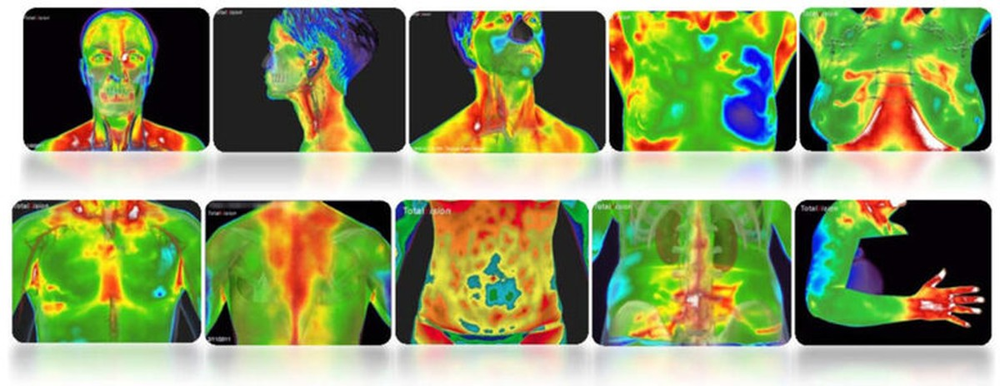

Signature program
Rooted Renewal
A progressive, layered program designed to heal and rewire emotions, the nervous system, and the brain. Four levels, each complete on its own, each building on the one before.
Explore Rooted Renewal
Each service is designed to reveal what the body is telling you, and support real, lasting change.
A progressive, layered program designed to heal and rewire emotions, the nervous system, and the brain. Four levels, each complete on its own, each building on the one before.
Explore Rooted Renewal

Full-body infrared imaging that maps temperature and circulation patterns across your entire body. No radiation, no compression, no contact.
It's a window into whole-body inflammation, circulation, and stress patterns long before symptoms show up elsewhere.
Learn more about Thermography →Millions of Americans suffer needlessly from conditions like IBS, migraines, arthritis, chronic fatigue, fibromyalgia, skin eruptions, and brain fog that are directly related to the foods they eat. Even foods considered healthy can trigger sensitivities that are never identified. Food sensitivities create inflammation, leaky gut, and an immune response that shifts organs and systems into imbalance.
Denise uses the LEAP protocol and MRT (Mediator Release Test), the most accurate and comprehensive blood test available for food and food chemical reactions. MRT tests your immune system's response to 170 foods and chemicals, measuring mediator release from white blood cells to identify hidden inflammation-producing triggers.


Denise has partnered with Dr. Hilu of Hilu Clinic, Spain to offer blood cell analysis in the USA. Several drops of peripheral blood from the fingertip provide an in-depth analysis of the current state of the patient's blood cells through extreme microscope magnification, up to 65,000x, revealing the root cause of imbalance and disease.
Blood Cell Analysis reveals the biological makeup of each individual, with different cellular patterns commonly linked to specific health challenges. As Dr. Hilu says, "everything is related to everything." Address the root issue, not the individual symptoms, and the rest of the body follows.
The AO Scan is a non-invasive, frequency-based wellness tool that uses subtle bio-frequencies and electromagnetic signals to communicate with the body, identifying areas where energetic balance may be supported. It draws on a library of over 120,000 Blueprint Frequencies to compare your personal frequency patterns across cells, tissues, organs, and emotional states.
Results are delivered as a detailed report reviewed together with Denise to inform your personalized wellness plan. The AO Scan also includes Inner Voice technology, which analyzes vocal frequencies to generate personalized audio tones that support emotional awareness and balance.
Learn more about AO Scan →
We'll talk through your goals and figure out which services make sense for you. No pressure, no commitment.
Schedule your free consult6837 Falls of Neuse Rd
Ste 106, Raleigh, NC 27615
15 min, new clients
Download before your visit